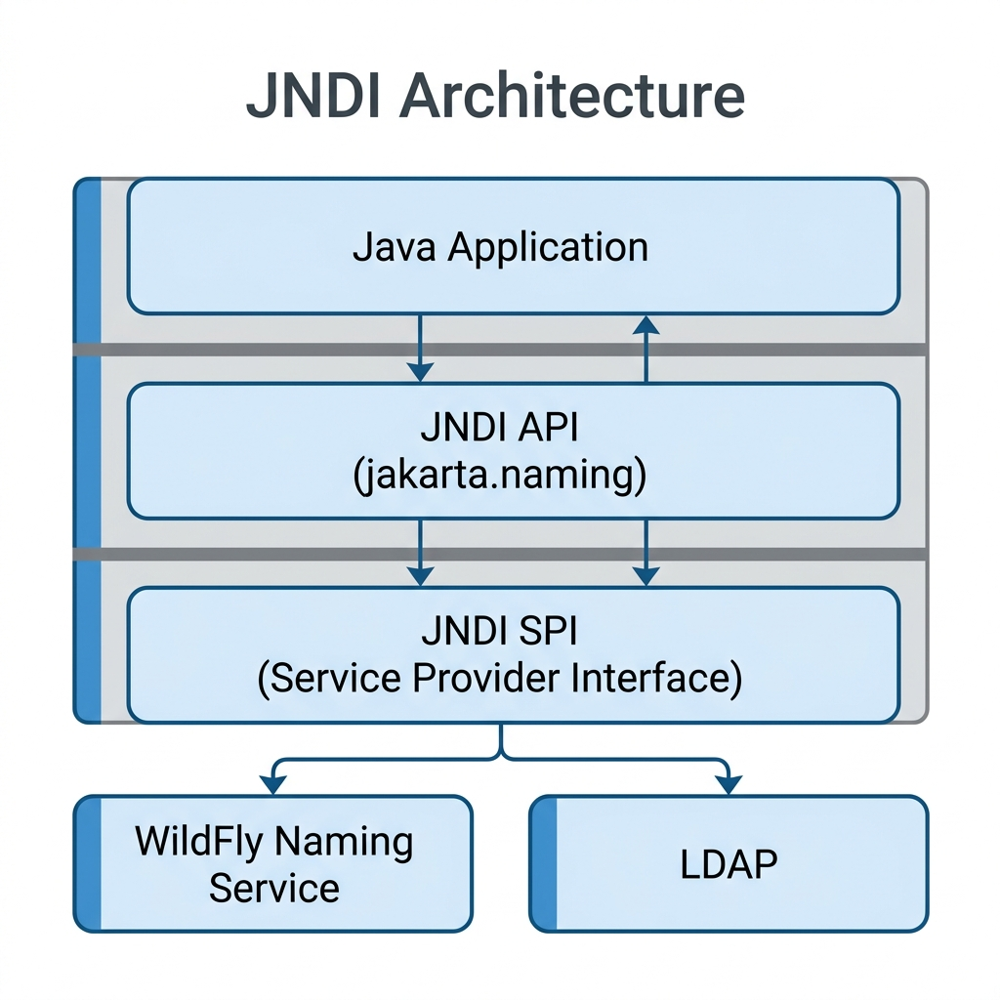
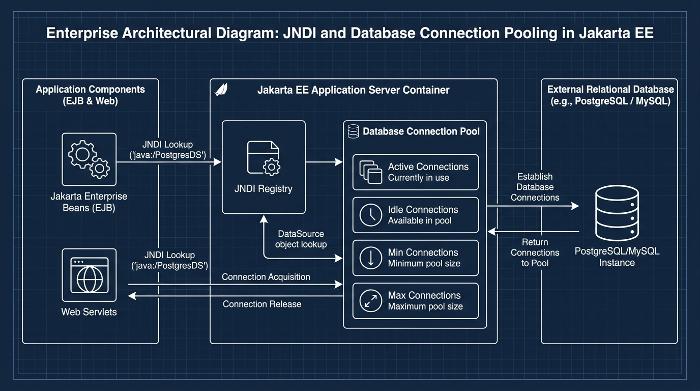

<title>JNDI, DataSources & Pools</title>
<meta name="description" content="How code finds shared resources by name, and how database connection pooling keeps apps fast.">
<link rel="stylesheet" href="assets/css/styles.css">
<script>window.PAGE = "05-jndi-and-resources";</script>

<main class="page">

  <h1>Unit 05 · JNDI, DataSources &amp; connection pools</h1>
  <p class="lede">Your bean needs a database. It shouldn’t hard-code where the database lives or how to
    connect. Instead it asks for a resource <em>by name</em>. The name service is <strong>JNDI</strong>;
    the resource is a <strong>DataSource</strong> backed by a <strong>connection pool</strong>.</p>

  <div class="callout"><span class="callout__i">↩︎</span>
    <div class="callout__b"><b>Recap</b> The container manages beans and wraps them with services.
      A <em>resource</em> is an external thing a bean uses — usually a database, a message queue, or a
      mail session.</div>
  </div>

  <span class="eyebrow">concept</span>
  <h2>JNDI — the building directory</h2>
  <div class="callout callout--analogy"><span class="callout__i">🏢</span>
    <div class="callout__b"><b>Analogy</b>
      A big office. Hundreds of staff need the printer room, the mailroom, the meeting rooms. If
      everyone had to <em>find</em> those themselves, chaos. So there’s a directory on the wall:
      “Printer → Floor 3, Room 301.” JNDI is that directory for a Jakarta EE app.</div>
  </div>
  <p><strong>JNDI</strong> (Java Naming and Directory Interface) maps a simple name to a real object
    living on the server. Your code looks up <code>"jdbc/GlobalBankDB"</code> and gets back a working
    database resource — with no idea which machine or port it’s on.</p>

  <div class="tablewrap"><table>
    <thead><tr><th>JNDI name (the “phone number”)</th><th>Real object (the “person”)</th></tr></thead>
    <tbody>
      <tr><td><code>java:global/MyApp/AccountBean</code></td><td>an <code>AccountBean</code> instance</td></tr>
      <tr><td><code>java:/jdbc/GlobalBankDB</code></td><td>a PostgreSQL DataSource</td></tr>
      <tr><td><code>jms/TransactionQueue</code></td><td>a JMS queue</td></tr>
    </tbody>
  </table></div>

  <figure>
    
    <figcaption><b>Takeaway:</b> your code only ever touches the middle layer, the JNDI API. Swapping
      WildFly for another server changes the bottom layer (the vendor’s job), not your lookup code.</figcaption>
  </figure>

  <div class="callout callout--mistake"><span class="callout__i">⚠️</span>
    <div class="callout__b"><b>What changed from the original notes — a real bug</b>
      The old Session 3 theory imported <code>jakarta.naming.InitialContext</code> and
      <code>jakarta.naming.NamingException</code>. <strong>That package does not exist.</strong> JNDI
      kept the old prefix: it is <code>javax.naming.InitialContext</code> /
      <code>javax.naming.NamingException</code>. (The Session 3 class-task file had it right — the two
      disagreed.) Use <code>javax.naming</code>.</div>
  </div>

  <span class="eyebrow">concept</span>
  <h2>The three namespaces</h2>
  <p>Like different sections of the directory — from widest to narrowest reach:</p>
  <div class="tablewrap"><table>
    <thead><tr><th>Namespace</th><th>Reach</th><th>Who can look it up</th></tr></thead>
    <tbody>
      <tr><td><code>java:global</code></td><td>Whole server</td><td>Any application, module or client</td></tr>
      <tr><td><code>java:app</code></td><td>One application (EAR)</td><td>Any module inside the same app</td></tr>
      <tr><td><code>java:module</code></td><td>One JAR/WAR module</td><td>Only beans in the same module</td></tr>
    </tbody>
  </table></div>
  <p>A global name reads like a path:
    <code>java:global/GlobalBankApp/AccountEJB/AccountBean!com.globalbank.AccountRemote</code> =
    app / module / bean class <code>!</code> interface. It is <strong>case-sensitive</strong>.</p>

  <div class="code-head">Looking a bean up by hand</div>
  <pre><code>import javax.naming.Context;          // NOT jakarta.naming
import javax.naming.InitialContext;

Context ctx = new InitialContext();  // "open the directory"
AccountRemote account = (AccountRemote) ctx.lookup(
    "java:global/GlobalBankApp/AccountEJB/AccountBean!com.globalbank.AccountRemote");
double balance = account.getBalance(12345);</code></pre>
  <p>Most of the time you skip all this and let the container inject the bean:
    <code>@EJB AccountRemote account;</code> or <code>@Inject AccountService account;</code>.</p>

  <span class="eyebrow">concept</span>
  <h2>Why database connections need a pool</h2>
  <div class="callout callout--analogy"><span class="callout__i">☎️</span>
    <div class="callout__b"><b>Analogy</b>
      Every time a bank teller served a customer, imagine they had to call IT, wait for a new phone
      line to the database to be installed, do the transaction, then have the line removed. Absurd.
      Yet opening a fresh database connection really does take 200–2000 ms each time.</div>
  </div>
  <p>A <strong>connection pool</strong> keeps a set of connections already open. Code borrows one,
    uses it, returns it — no setup cost. A <strong>DataSource</strong> is the object you ask for a
    connection; behind it sits the pool, configured by an administrator.</p>

  <figure>
    
    <figcaption><b>Takeaway:</b> <code>conn.close()</code> on a pooled connection doesn’t close it —
      it <em>returns</em> it to the pool for the next caller.</figcaption>
  </figure>

  <div class="code-head">A bean using a DataSource</div>
  <pre><code>@Stateless
public class AccountBean implements AccountRemote {

    @Resource(lookup = "java:/jdbc/GlobalBankDB")   // container injects the DataSource
    private DataSource ds;

    @Override
    public double getBalance(int accountId) {
        try (Connection conn = ds.getConnection();                       // borrow from pool
             PreparedStatement st = conn.prepareStatement(
                 "SELECT balance FROM accounts WHERE account_id = ?")) {
            st.setInt(1, accountId);                                     // ? prevents SQL injection
            ResultSet rs = st.executeQuery();
            return rs.next() ? rs.getDouble("balance") : 0.0;
        } catch (Exception e) {
            throw new RuntimeException("Could not read balance", e);
        }
        // try-with-resources returns the connection to the pool automatically
    }
}</code></pre>

  <div class="bench" data-run="canned">
    <div class="bench__head"><span class="dot"></span><span class="kind">try it</span><span class="mode">replay — real server output</span></div>
    <pre class="bench__code"><code>// a servlet looks up the UpperCase bean via JNDI and calls it
InitialContext ctx = new InitialContext();
UpperCaseRemote bean = (UpperCaseRemote) ctx.lookup(
    "java:global/Uppercase/UppercaseBean/UpperCase!demo.jndi.UpperCaseRemote");
out.print(bean.sayHello());   // input: "hello jndi"</code></pre>
    <div class="bench__controls">
      <button class="btn-run" type="button">Run</button>
      <span class="bench__hint">Watch the JNDI binding line WildFly prints — you copy that exact string into lookup().</span>
    </div>
    <script type="text/plain" class="bench__canned">
[server] JNDI bindings for session bean named 'UpperCase':
[server]   java:global/Uppercase/UppercaseBean/UpperCase!demo.jndi.UpperCaseRemote
[server]   java:app/UppercaseBean/UpperCase!demo.jndi.UpperCaseRemote
[server] String : HELLO JNDI
[browser] HELLO JNDI
    </script>
    <pre class="bench__out" aria-live="polite"></pre>
  </div>

  <span class="eyebrow">concept</span>
  <h2>Configurable values with <code>&lt;env-entry&gt;</code></h2>
  <p>Small settings — a transfer limit, a minimum credit score — can be declared in a deployment
    descriptor and looked up at runtime, so ops can change them without touching code:</p>
  <pre><code>&lt;env-entry&gt;
  &lt;env-entry-name&gt;maxTransferLimit&lt;/env-entry-name&gt;
  &lt;env-entry-type&gt;java.lang.Double&lt;/env-entry-type&gt;
  &lt;env-entry-value&gt;50000.00&lt;/env-entry-value&gt;
&lt;/env-entry&gt;</code></pre>
  <pre><code>@Resource(name = "maxTransferLimit")
private Double maxTransferLimit;   // container fills it from the descriptor</code></pre>

  <span class="eyebrow">check yourself</span>
  <section class="quiz" data-quiz>
    <h3>Check yourself</h3>
    <script type="application/json">
    [
      {"q":"What does JNDI give you?","opts":["A faster database","A directory that maps a simple name to a real server object, so code needn't know where things live","A way to write SQL","A replacement for Maven"],"a":1,"why":"Look up 'jdbc/GlobalBankDB' and get a working resource — location and vendor details hidden."},
      {"q":"Which import is correct for JNDI?","opts":["import jakarta.naming.InitialContext;","import javax.naming.InitialContext;","import jakarta.jndi.InitialContext;","import java.naming.Context;"],"a":1,"why":"JNDI stayed under javax.naming. jakarta.naming does not exist — a bug in the original Session 3 notes."},
      {"q":"java:module names are visible to...","opts":["Any client anywhere on the server","Only beans in the same JAR/WAR module","Any module in the same EAR","External REST clients"],"a":1,"why":"module = narrowest scope. app = same EAR. global = whole server."},
      {"q":"Why use a connection pool + DataSource instead of opening a connection each time?","opts":["It's the only way that compiles","Opening a physical connection costs 200–2000 ms; the pool keeps them open and lends them out instantly","Pools encrypt the data","DataSources don't need SQL"],"a":1,"why":"Reusing pre-opened connections removes the per-request setup cost that would otherwise sink a busy app."},
      {"q":"On a pooled connection, conn.close() does what?","opts":["Permanently closes the TCP connection","Returns the connection to the pool for the next caller","Deletes the DataSource","Throws an exception"],"a":1,"why":"'close' means 'I'm done with it' — the pool takes it back. try-with-resources does this for you."}
    ]
    </script>
  </section>

  <span class="eyebrow">recap</span>
  <h2>One-line summary</h2>
  <div class="tablewrap summary"><table><tbody>
    <tr><td>JNDI</td><td>Name → object directory. Look up resources instead of hard-coding them. Use <code>javax.naming</code>.</td></tr>
    <tr><td>Namespaces</td><td><code>java:global</code> (server) ⊃ <code>java:app</code> (one EAR) ⊃ <code>java:module</code> (one JAR/WAR).</td></tr>
    <tr><td>DataSource</td><td>The object you ask for a DB connection; inject with <code>@Resource(lookup=…)</code>.</td></tr>
    <tr><td>Connection pool</td><td>Pre-opened connections lent out and returned; <code>close()</code> = return, not destroy.</td></tr>
    <tr><td><code>&lt;env-entry&gt;</code></td><td>Config values ops can change without recompiling.</td></tr>
  </tbody></table></div>

</main>

<script src="assets/js/course.js"></script>
<script src="assets/js/runner.js"></script>
